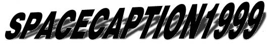
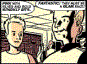
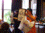

spacecaption1999 took place on Saturday and Sunday 21-22 August 1999, in our usual venue, the Oxford Union Society.
Jenni Scott's report, as posted to the Comix mailing list.
 SPACECAPTION1999: The Frightwig Factor This is D'Israeli's strip for the spacecaption1999 programme, featuring caricatures of the CAPTION committee in the style of Space: 1999. Also, the cover.
 Matt Brooker's photo album
Some of the pictures Matt took—put faces to all the names.
Matt Brooker's photo album
Some of the pictures Matt took—put faces to all the names.
 Gideon Nisbet's photo album Some of the pictures Gideon took on his Olympus C-1000L digital camera.
Featured stalls
- Slab-O-Concrete
- Capricorn Comics
- Bug Powder Dustribution
- Comics Creators Guild
Archive
The on-line flier: Front page | Introduction | Get Involved | Dates, Times and Places | Entry form
GPS Note
The GPS (Global Positioning Satellite, I think) has its equivalent of the Y2K during the CAPTION weekend when its weeks counter clocks over to 0. For more information, see The Register: End-of-the-week bug to eat GPS.